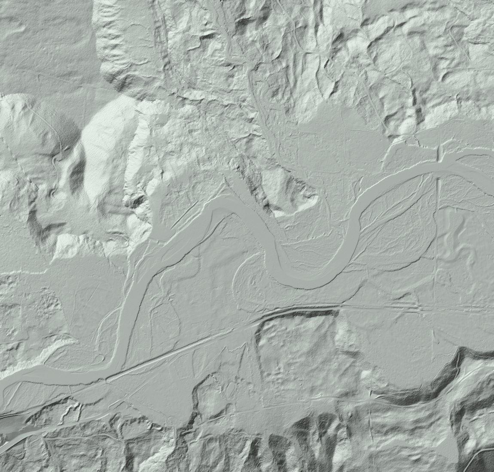
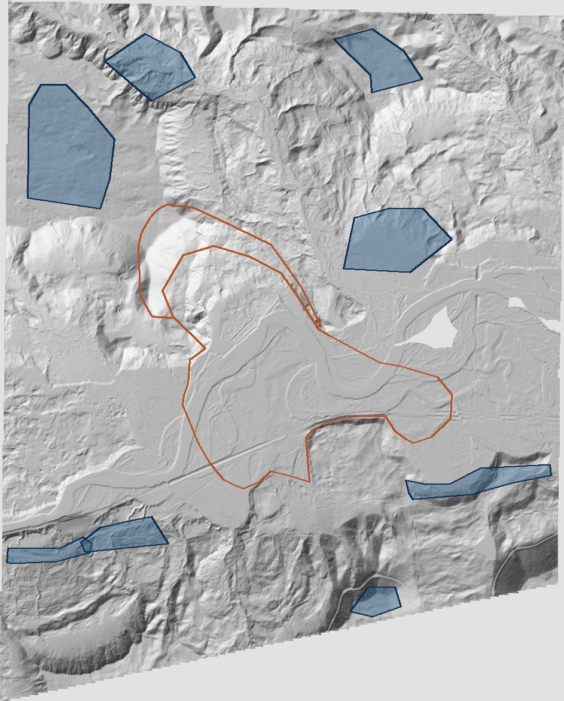
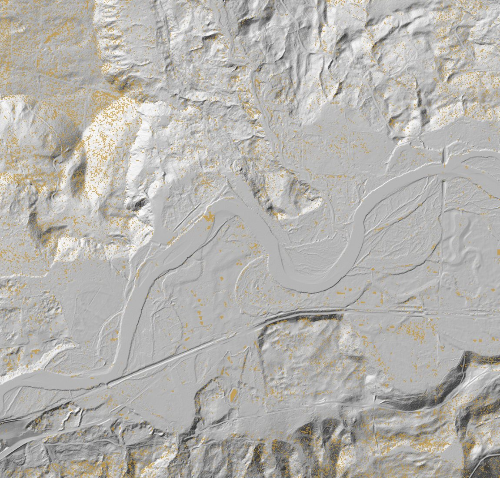
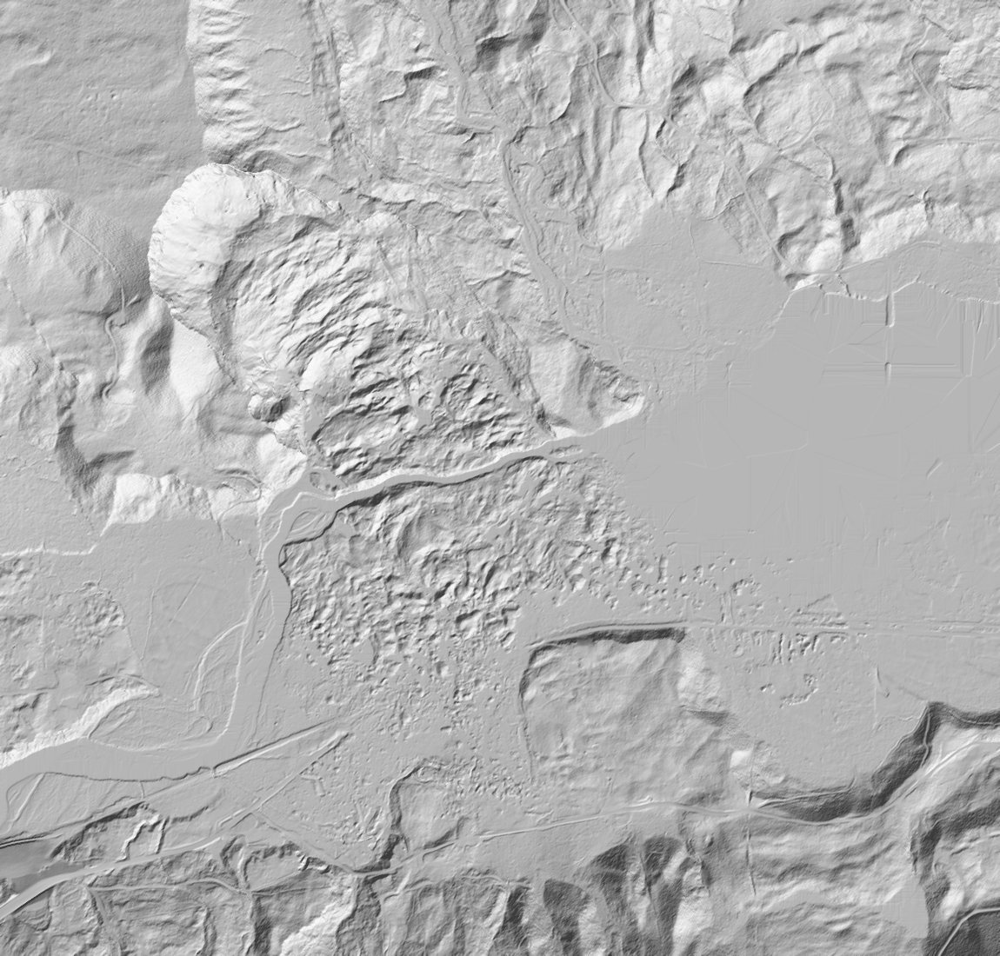
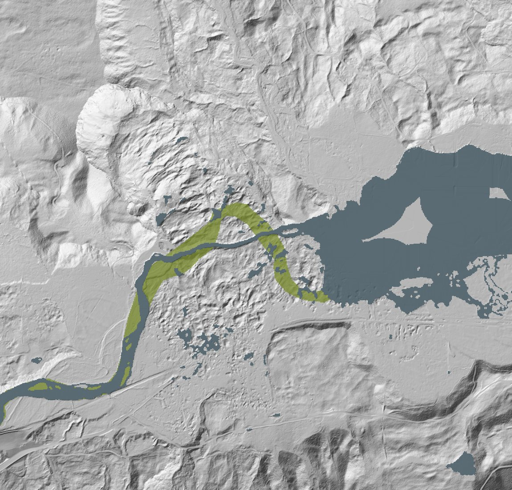
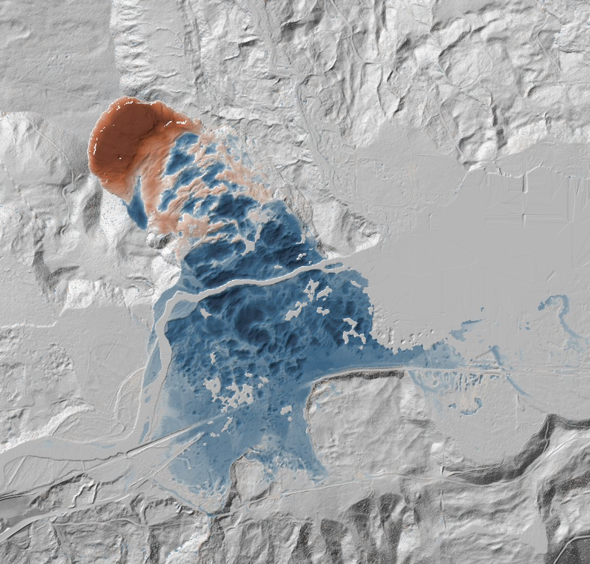
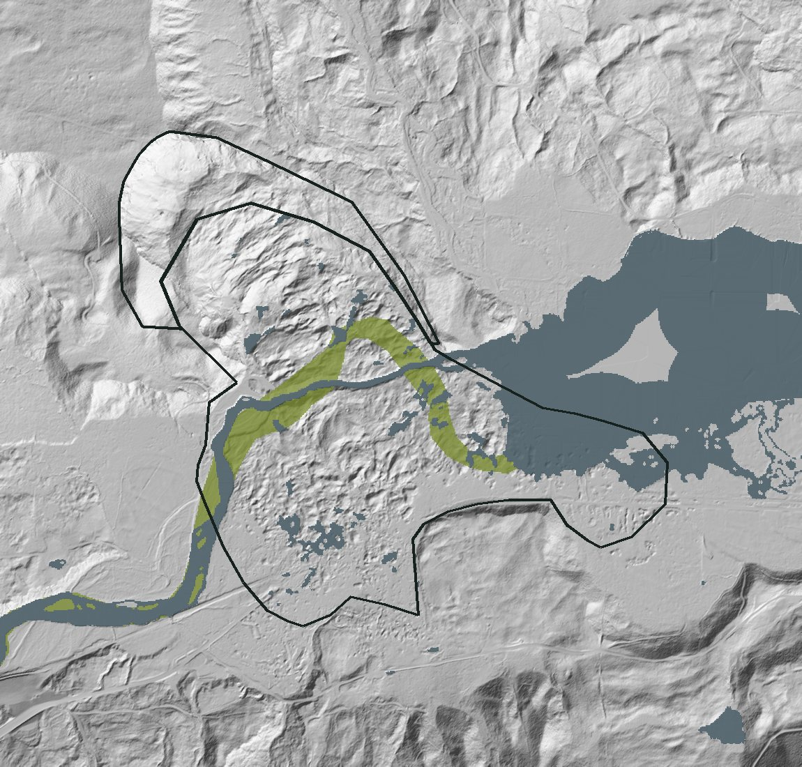

On 22 March 2014 a hillside above the North Fork Stillaguamish River in Washington collapsed and buried the valley floor. Two airborne lidar surveys, one before and one after, show what moved and how much.
The Oso (SR530) landslide is one of the best documented landslides in the United States. It killed 43 people and blocked the river and State Route 530. Because the area was surveyed by airborne lidar in 2013 and again about two weeks after the slide, it is also a clean test case for lidar change detection.
I processed both surveys end to end: from the raw point clouds to co-registered terrain models, an error model, water masks, a map of significant elevation change and volumes for the source and runout zones, each with its uncertainty. 3.94 million m³ left the source area, in line with the published USGS estimate. At least 3.36 million m³ was deposited on the valley floor: part of the deposit was still under water when the post-event survey was flown.
Code, method and full results on GitHub
This is a public case study using US public data, not client work.
Drag the white handle to compare the 2013 and 2014 terrain. Hover over or tap the map to read the elevation in each survey and the measured change.
From the head of the slide across the river to the south side of the valley. The upper slope dropped by up to 80 m; the debris spread over the floodplain several metres thick.
The same workflow runs on any pair of lidar surveys. Each step writes its own outputs and metadata, so every number in the final report can be traced back to the data and settings that produced it.







PDAL, laspy
Point density, voids, classes and flight times are checked for each survey, and the coordinate system is verified against the data themselves. Both surveys came in US survey feet, so they were converted to metres before any comparison.
Stable-area ICP (py4dgeo)
Eight stable areas are drawn on terrain that did not change. The 2014 cloud is aligned to 2013 using only the ground points inside them, so the landslide itself cannot bias the registration. The residual difference on those areas then measures the survey error.
PDAL, GDAL
A cell is measured when it holds a ground point; otherwise its elevation, and the change computed there, is interpolated. Under the 2013 forest about one laser pulse per m² reached the ground, so a 1 m grid leaves a third of the cells empty. The cell size is therefore taken from the data: the finest grid at which at least 90 % of the area is measured in both surveys, here 3 m.
Stable-area statistics, slope-dependent error model
The spread of differences on stable ground gives the survey error, split by slope and by measured or interpolated cells. It sets a level of detection for each cell: smaller changes are treated as noise.
ASPRS water class, drawn 2013 channel
A ground terrain model has no ground under water: gap filling bridges the lake and the river from their banks, and the difference would count the water level as deposit. The 2014 water comes from the points the vendor classified as water, with the lake drawn by hand where its returns are too sparse. The 2013 delivery has no water class, so the river channel was drawn. Where 2014 is water, the cells leave the budget; the old channel, now under the deposit, stays in and is flagged.
DEM of difference, 95 % level of detection
The 2013 terrain is subtracted from the 2014 terrain. A cell counts as change only where the difference exceeds its own level of detection, which grows on steep slopes and away from measured ground. Cells steeper than 45° never count.
Zonal volumes, uncertainty propagation, report
Volumes are summed inside a source zone and a runout zone based on the USGS deposit outline. Each zone is split into measured and interpolated cells, with the water cells listed apart, and each volume comes with its uncertainty.
The volume that left the source matches the published estimate. The deposit comes out lower, and the data show why.
Source: 3.94 ± 0.02 million m³ left the source area. Iverson et al. (2015) estimate 8.3 million m³ mobilized, of which about 4.5 million m³ stayed in the source area: about 3.8 million m³ left it.
Runout: 3.36 ± 0.03 million m³ was deposited on dry ground in the runout zone. Anderson et al. (2017) derive about 3.9 million m³ for the valley-floor deposit, measured after the lake had drained. In April 2014 part of the deposit was still under the impoundment lake and the new river channel, so those cells are left out. Counted to the water surface they would add 0.27 million m³ (3.64 in total, 7 % below the published value, against 14 % on dry ground only).
Balance: over the whole landslide, erosion is 4.32 and deposition 3.74 million m³ (net −13 %). 0.27 of the 0.58 million m³ gap is the deposit under the 2014 water.
Uncertainty combines the systematic survey error with a conservative term for interpolated cells (a 1 m bias on every interpolated cell of change). With 3 m cells, 18 % of the source volume and 2 % of the runout volume rely on interpolated cells (65 % and 23 % at 1 m), which is why the uncertainty is four to six times smaller than at 1 m. The zone outlines are approximate and are not included.
The point clouds are labelled with a metric coordinate system but stored in US survey feet. They were assigned the correct units and converted to metres before processing; read as labelled, heights would be off by a factor of 3.3 and volumes by 35.
The post-event survey is a mosaic of flights: 86 % of the points were flown on 3 and 6 April 2014, the rest on a Monday (7 April, or the 24 March emergency flight). By then the river had already started to erode the deposit.
The impoundment lake gave no ground return in 2014; like the river, it is mapped as water. Cells where 2014 is water are left out, which makes the runout volume a lower bound. Where the deposit buried the 2013 river, the deposit is underestimated by the 2013 water depth.